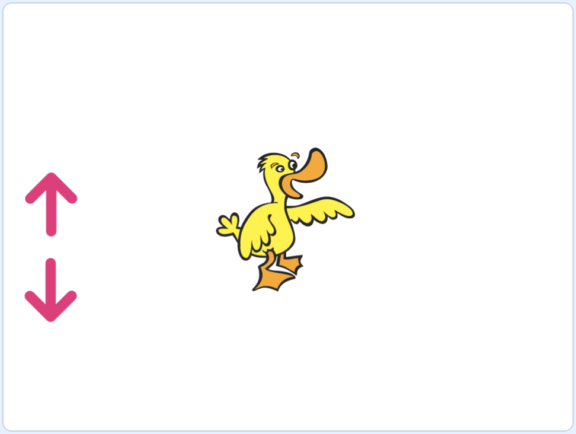

Building from Scratch
Broadcasts
- A useful feature in Scratch will allow our sprites to communicate with each other.
- We’ll add our cat and dinosaur sprites, and rotate the dinosaur so it faces the cat.
- Now, we’ll have the cat say hello to the dinosaur:
when green flag clicked say [Hello, Dinosaur!] for (2) seconds - We’ll also have our dinosaur say hello back, but it should wait for two seconds:
when green flag clicked wait (2) seconds say [Hello, Cat!] for (2) seconds - But now, if we want to have the cat say hello for just one second, we have to remember to change how long the dinosaur waits. And this will be more complex as we have more interactions, or even more sprites on the stage.
- It turns out that our cat sprite can use broadcasting, or the ability to send a message or signal. And our dinosaur sprite can respond when it receives that message.
- In the Events category of blocks, we’ll use the “broadcast” block. We’ll use the dropdown to choose “New message”, and we’ll just call it “greet”:
broadcast (greet v) - We’ll change our cat’s script to use that block to send a message when it’s done:
when green flag clicked say [Hello, Dinosaur!] for (2) seconds broadcast (greet v) - And for our dinosaur, we can use the “when I receive” block:
when I receive [greet v] say [Hello, Cat!] for (2) seconds- Now, our dinosaur will always respond when our cat finishes saying hello.
Control the Duck
- Let’s add a duck to our stage for Control the Duck.
- We can use the arrow keys to control it, but let’s add two arrows sprites to the stage, and rotate one so it’s pointing up, and the other so it’s pointing down:

- For the arrow pointing up, we’ll tell it to broadcast a message of “up” whenever it’s clicked:
when this sprite clicked broadcast (up v) - And for the arrow pointing down, we’ll broadcast another message, “down”:
when this sprite clicked broadcast (down v) - For our duck, we’ll tell it to move up or down based on the message it receives:
when I receive [up v] change y by (10) when I receive [down v] change y by (-10) - Now, each of the arrow sprites will broadcast a message when they are clicked, and our duck will move when it receives a message.
Visiting Fish
- The stage can broadcast messages as well, as we’ll see in Visiting Fish.
- We’ll change our backdrop to “Underwater 1”, and add a fish sprite.
- Now, we can click on the backdrop in the bottom right, and in the Code tab, add the “when stage clicked” block in the Events section:
when stage clicked broadcast (visit v)- Then, we’ll broadcast a new message that we’ll call “visit”.
- We’ll tell our fish to go to our mouse pointer when it receives the “visit” message:
when I receive [visit v] point towards (mouse-pointer v) glide (1) secs to (mouse-pointer v)- Now, after we click the flag, we can click anywhere on the stage and our fish will move to it.
Stars
- Let’s see how we might be able to clone, or copy, a sprite with Stars.
- With our plain white backdrop and a star sprite, we’ll add the following blocks:
when this sprite clicked create clone of (myself v) when I start as a clone glide (1) secs to (random position v)- The “create clone” and “when I start as a clone” blocks are in the Control section of blocks.
- Now, whenever our star is clicked, it will make a copy of itself. Then, the copy will run whatever script is under “when I start as a clone”, moving itself to a random position on the stage.
Crystal Catch
- Let’s remove our stars, and build a fully complete game with Crystal Catch.
- We’ll start by using our cat, and try to build a game where we’re catching the “Crystal” sprite. We’ll ultimately want crystals to fall from the sky, and for the cat to catch them before they reach the ground.
- First, we’ll add blocks for our cat to move left and right with the arrow keys:
when [left arrow v] key pressed change x by (-10) when [right arrow v] key pressed change x by (10) - Then, we’ll want our cat to start in the middle of the stage when the green flag is clicked:
when green flag clicked go to x: (0) y: (-125) say (Catch the crystals without letting them hit the ground!) for (4) seconds broadcast (begin v)- We’ll also say some instructions for our user.
- We should hide the crystal before the game starts, and then make clones of itself since we’ll want many crystals to appear. Before that, we’ll need our cat to broadcast a message, “begin”.
- Now we can tell our crystal to hide itself at the beginning, and make clones of itself when the game has started:
when green flag clicked hide when I receive [begin v] create clone of (myself v) - Then, when the crystal starts as a clone, it should show itself:
when I start as a clone show go to x: (0) y: (160) forever change y by (-2)- After our crystal appears, it will start at the top center of the stage, and move down over and over in a forever loop.
- Notice that we’re building our game one component at a time, and we can always start our program to make sure that everything we’ve made is working so far.
- Next, our crystal will need to check if it is touching the cat:
when I start as a clone show go to x: (0) y: (160) forever change y by (-2) if <touching (Cat v) ?> then - We’ll make a new variable called “catches” to represent the score, and we’ll reset it in our cat’s script, since we’re doing other resetting there as well:
when green flag clicked go to x: (0) y: (-125) set [catches v] to (0) say (Catch the crystals without letting them hit the ground!) for (4) seconds broadcast (begin v) - Now we can go back to our crystal’s script, and add blocks for what we need to do when it touches our cat:
when I start as a clone show go to x: (0) y: (160) forever change y by (-2) if <touching (Cat v) ?> then change [catches v] by (1) create clone of (myself v) delete this clone- We’ll need to increase our “catches” variable by 1, to keep track of our score.
- Then, we need to create a new crystal, and make our original crystal delete itself.
- The new crystal will start at the top of the screen, since it’s a new clone.
- Let’s change the x value of the crystal’s position to something random, so our game has some unpredictability. The far left and far right of the stage will be some big numbers, so we’ll use negative 200 and 200:
when I start as a clone show go to x: (pick random (-200) to (200)) y: (160)- Now, our crystals will appear in different spots every time.
- If we don’t catch the crystal, we might want to count the number of misses there has been so far.
- We’ll create a new variable called “misses”, which will keep track of the number of times that our cat has not caught the crystal. We’ll reset this to 0 every time the game is started, as well:
when green flag clicked go to x: (0) y: (-125) set [catches v] to (0) set [misses v] to (0) say (Catch the crystals without letting them hit the ground!) for (4) seconds broadcast (begin v) - Now, we can tell our crystal to check if it’s touching the ground (or edge):
when I start as a clone show go to x: (0) y: (160) forever change y by (-2) if <touching (Cat v) ?> then change [catches v] by (1) create clone of (myself v) delete this clone end if <touching (edge v) ?> then change [misses v] by (1) create clone of (myself v) delete this clone end- If our crystal reaches the edge, we’ll increase the value of “misses”, and then create a new clone, and delete this clone.
- We might want a limit to the number of misses we can have, so we can have a condition to check for that:
if <touching (edge v) ?> then change [misses v] by (1) if <(misses) = (3)> then broadcast (game over v) delete this clone end create clone of (myself v) delete this clone end- After we miss, we’ll check if the number is three. If so, we’ll broadcast a message for our cat, and then delete this clone.
- Finally, in our cat’s script, we can say our score when we receive that message:
when I receive [game over v] say (join (Your score is) (catches)) for (5) seconds - We can try this, and see that our program is working as we intended. We can create more crystals at a time, by having our crystal clone itself over and over:
when I receive [begin v] forever create clone of (myself v) wait (15) seconds- Now, every 15 seconds, a new crystal will be created.
- But we see that when the game ends, new crystals will still be created. So, we’ll need our cat to stop everything in our program:
when I receive [game over v] say (join (Your score is) (catches)) for (5) seconds stop [all v] - With these examples, hopefully you can see how all of these components, tools, and concepts can be used to build interesting and exciting projects in Scratch.
- We encourage you to create something of your own, and share it with your friends, family and us. Thanks for joining us in Introduction to Programming with Scratch!